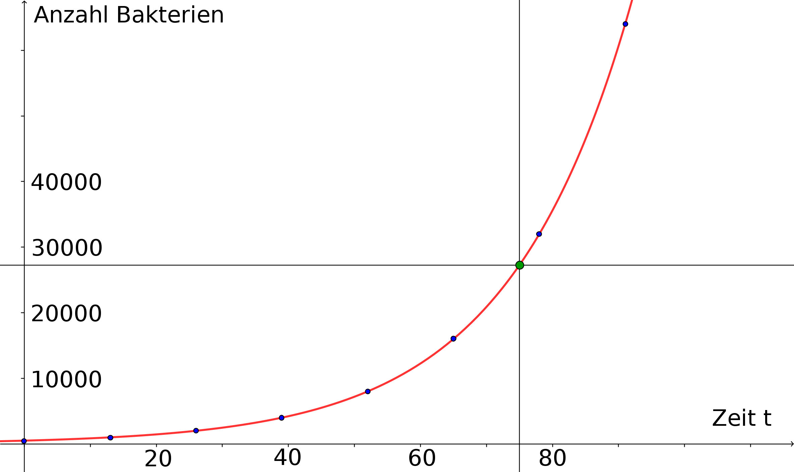

Beispiel
6.4.1
Eine Bakterienkultur enthält zu Versuchsbeginn
Bakterien und verdoppelt ihre Population alle
Minuten. Wir möchten gerne
wissen, wieviele Bakterien nach
Stunde und
Minuten (also nach
Minuten) in der Kultur vorhanden sind?
In einem ersten Anlauf können wir eine einfache Wertetabelle erstellen, die uns die Bakterienpopulation zu Beginn (
min),
nach
min, nach
min usw., also zu Vielfachen der
-Minuten-Verdopplungszeitspanne, angibt:
| Zeit in min | 0 | 13 | 26 | 39 | 52 | 65 | 78 | 91 | usw. |
| Anzahl Bakterien | 500 | 1000 | 2000 | 4000 | 8000 | 16000 | 32000 | 64000 | usw. |
Aus der Tabelle können wir abschätzen, dass die Antwort auf unsere Frage zwischen
und
, wahrscheinlich näher bei
, liegen wird. Doch wie sieht es mit einer präzis(er)en Antwort aus?
Dazu müssen wir den funktionalen Zusammenhang zwischen allgemeinen
-Werten und Bakterienanzahl kennen. In der
unten stehenden Abbildung ist auch der Graph einer Funktion
wiedergegeben; dieser Funktionsgraph füllt sozusagen die
Lücken zwischen den isolierten Punkten, die den Wertepaaren aus der Tabelle entsprechen und die ebenfalls eingezeichnet
sind. Die zugehörige Abbildungsvorschrift ordnet jedem reellen Zeitpunkt eine Populationsgröße zu. Wie wir sehen werden,
handelt es sich bei der Funktion um eine Exponentialfunktion.

Aus der graphischen Darstellung können wir die gesuchte Anzahl an Bakterien schon etwas genauer ablesen. Aber für die
exakte Angabe benötigen wir die Abbildungsvorschrift, die hinter dem Graphen aus der Abbildung steht und die wir hier
zunächst nur angeben:
(In Aufgabe
6.4.3 werden wir diesen funktionalen Zusammenhang begründen.)
Damit erhalten wir für
(gemessen in Minuten) den Funktionswert
Also leben nach
Minuten
Bakterien in der fraglichen Population.

 Kursinhalt
Kursinhalt Einführung
Einführung Mein Kurs
Mein Kurs Einstellungen
Einstellungen Eingangstest
Eingangstest Suche
Suche Das KIT
Das KIT Feedback
Feedback Beta-Version
Beta-Version